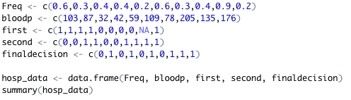
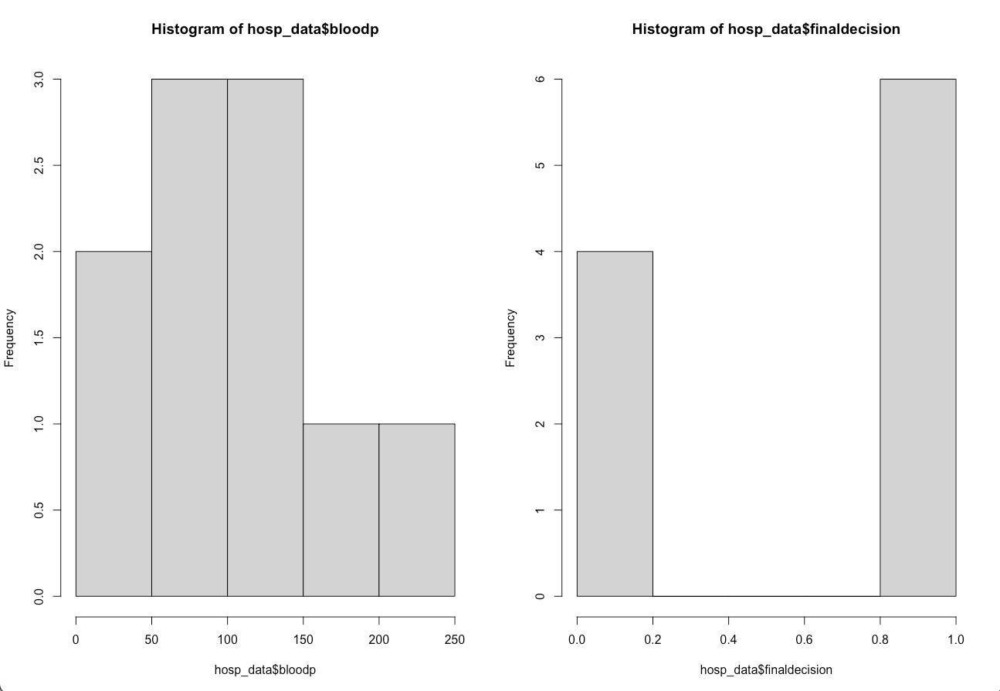
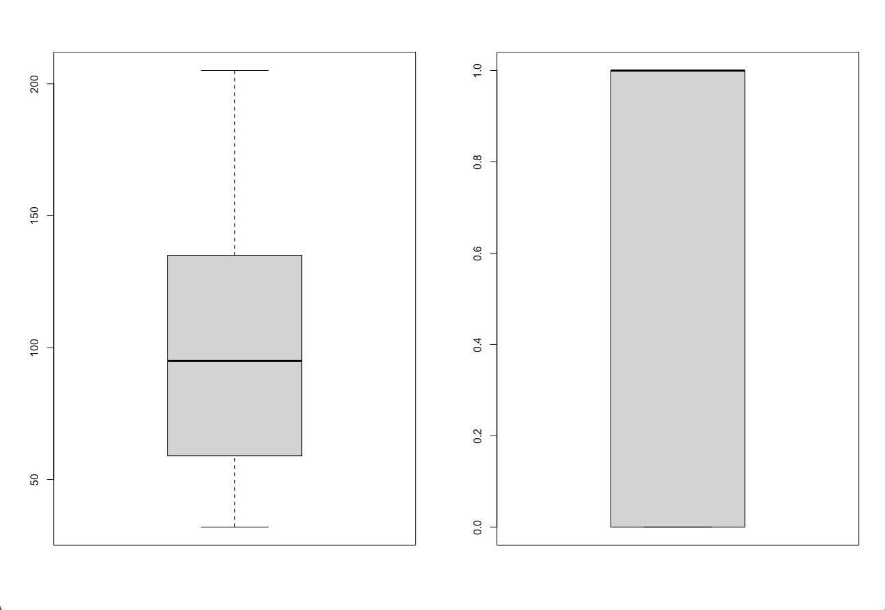
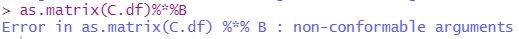
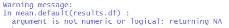
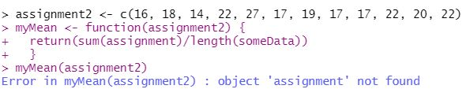
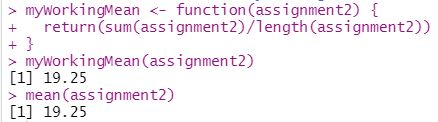
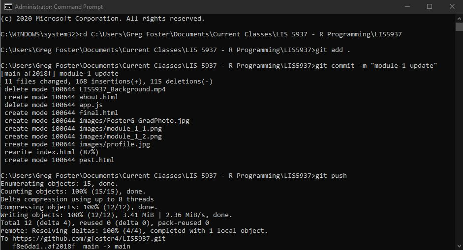

This week's assignment required the analysis of some sample medical data representing blood pressure diagnoses of 10 different patients.
Two side by side plots were required. The assignment wanted a histogram next to a boxplot, and for these plots to visualize firstly the patient blood pressure
and then the medical doctor's final decision regarding their need for immediate care. I found that the most meaningful way to organize the plots was by comparing
the histogram of blood pressure to the histogram of final decision, and likewise for the box plots.
I first created numeric vectors with the supplied data, with help from the assignment's hint. I then combined the vectors into a dataframe named "hosp_data".

I then generated a side by side plot using "par(mfrow=c(1,2)", placing the histograms for blood pressures and final decision together for comparison.

Next I generated a side by side plot placing the box plots for blood pressure and final decision next to eachother.

The histograms ended up being far more useful for data comparison than the box plots, as you are able to see the different distributions of the data more effectively.
From the side by side histograms you can see that the relationship between patient blood pressure and final decision for care by a medical doctor appear to make sense.
6 patients received high priority for immediate medical care. Four of the patient blood pressures stand out as being very abnormal and dangerous. Two patients had blood pressures
under 50, indicating severe hypotension, while two other patients had blood pressures over 150, indicating cardiovascular hypertension. The other two patients that received immediate care
may have had relatively normal blood pressures but other health variables not recorded led to the doctor's final decision.
The information presented is not nearly enough to make an informed decision as to the efficacy and accuracy of the medical doctor's diagnoses. For one there are only
10 patients presented in the dataset, and in order to properly gauge the efficacy of a diagnosis we need data on the patient's other health markers, like blood content levels,
body temperature, heart rate, and general condition.
As always the compiled R file can be found below, and all of the files can be found on my Github page.
This week's module was difficult. I continuously ran into errors with the prescribed operations in the assignment. While I worked around some of them, I was unable to complete
certain portions due to these unrelenting errors.
The most challenging portion was the matrix multiplication, as attempting to multiply a matrix is impossible to my knowledge with the dataset provided, unless the names column is taken away in order for the
matrix to recognize the numbers as integers. With this in mind, I attempted to recreate the example provided in the assignment, but could not for the life of me figure out how to make as.matrix(C.df)%*%B produce
anything other than errors. The error I kept receiving is shown below:

I did end up successfully obtaining the resulting matrix, but had to use a different method of multiplication by turning C.df into a matrix called C.m, then typing C.m * 1010101.
The only other error I consistently ran into was with finding the mean of data frames, as my version of R obstinantly refused to offer a value, printing out the message seen below:

If you see anything I did faulty to receive these errors please let me know, as of now I am unable to see what I have done wrong.
The full R file for this module can be viewed and downloaded below. Any lines returning an error have been commented out in order to successfully compile the pdf.
All updated files for this site and for the modules can be viewed at my github page here.
For this homework assignment, the task was to test a function posted in Canvas and identify it's possible errors.
I ran the function with the predetermined dataset (the vector object named assignment2) and R-Studio returned the following error:

This error appears because the 'myMean' function calls upon two nonexistent data objects in its mean and length functions. It calls upon
an object named "assignment" in its mean function, and it calls upon an object named "someData" in its length function. For the myMean function to
properly compute the mean of "assignment2", it needs to call upon "assignment2" in both the mean and length functions within it.
I fixed the errors and wrote a new function named "myWorkingMean" that properly computes the mean of "assignment2", shown below:

I also tested the result of "myWorkingMean" against R's built in "mean" function, and they returned the same values. This can be seen in the image above.
The full R file for this module can be viewed and downloaded below. The "myMean" function had to be commented out to successfully compile the file since it runs an error.
All updated files for this site and for the modules can be viewed at my github page here.
This is my first homework post for R programming in graduate school, very excited to be here!
My GitHub repository can be found here.
With the instruction in this week's module I successfully configured github so I can now use the command line to
update my repository, shown below.
